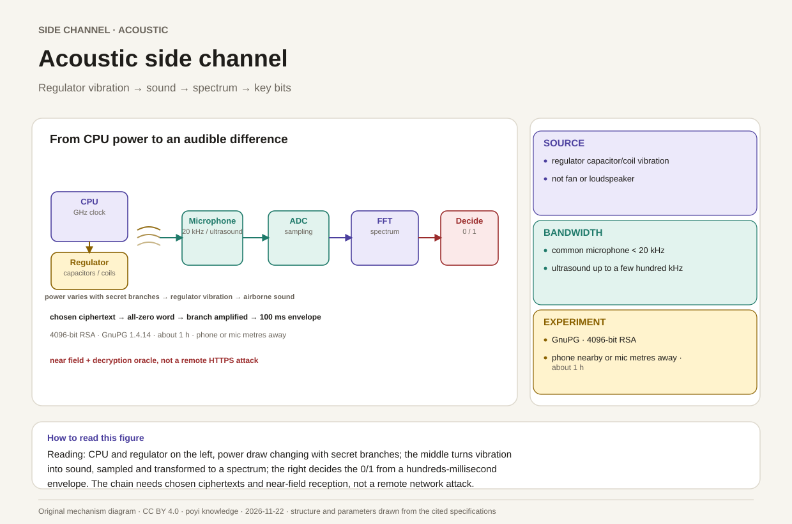
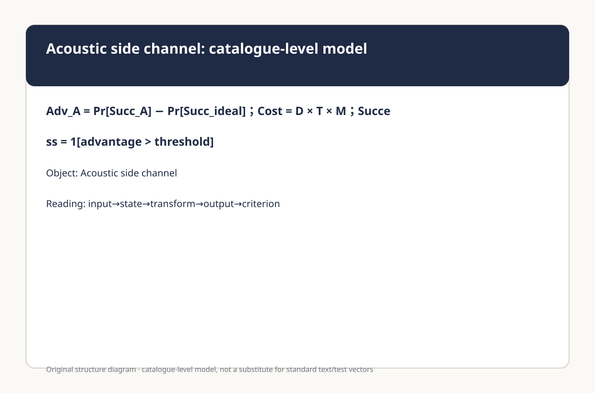

Principles
Attack: Acoustic Side Channel (声学侧信道). ### Where the sound comes from
When a computer runs, CPU power draw changes with instructions and data. The voltage-regulator circuit on the motherboard tries to hold a stable voltage; its capacitors and coils vibrate slightly as currents change, and that vibration reaches the air as sound. The relevant source is the regulator itself, not the fan or the speaker. ### Low bandwidth is not the same as no information
A common microphone hears below 20 kHz; an ultrasound microphone can reach a few hundred kHz. That is orders of magnitude below the GHz clock. The noise of a single instruction is buried in the background, but when the same key-dependent operation is repeated thousands of times, the leakage accumulates into an envelope lasting hundreds of milliseconds and separable in the spectrum.

Why it matters
An acoustic side channel does not attack the mathematical structure of RSA or AES; it attacks the implementation. Branches, table lookups and multiplication paths change with secret data, and power and sound change with them. If the attacker can get close, make the machine decrypt chosen ciphertexts and know the implementation, a mathematical security proof does not cover this physical path.
GnuPG 1.4.14's RSA modular exponentiation used a window algorithm in which some all-zero intermediate words took a different branch. Genkin–Shamir–Tromer crafted ciphertexts that produced many all-zero words, amplifying a tiny branch into an audible difference lasting hundreds of milliseconds and recovering a 4096-bit RSA private key bit by bit.
Applications
The 2014 demonstration used an ordinary mobile phone next to a laptop, or a sensitive microphone several metres away; full 4096-bit RSA key recovery took about an hour. It needs chosen ciphertexts and a decryption operation, usually a local or near-field setting, not a remote attack against an arbitrary HTTPS server.
Engineering should use constant-time, branchless modular exponentiation, enable RSA blinding and keep secret data out of control flow. Physical defences include acoustic shielding, masking noise and chassis damping. For high-value machines, acoustic shielding belongs with power, electromagnetic and cache side-channel controls, not instead of them.
A shared name may belong to an algorithm, standard, event, person or term; this entry is responsible only for its catalogue binding and does not absorb adjacent records. If versions, regions or institutions define the name differently, the differences stay side by side.

Limits & attacks
The chain requires a target running an affected GnuPG version, an attacker who can submit arbitrary ciphertexts and observe decryption, a microphone that can hear the machine, and knowledge of the implementation and key size. Remove any one and the one-hour demonstration no longer holds.
The acoustic side channel recovers RSA key bits from the decryption process, not keystrokes, not fan noise. Its bandwidth is low and its signal weak, but it still matters for air-gapped machines: sound crosses air and some partitions where a network attack cannot reach.
History
Shamir and Tromer first showed at the Eurocrypt 2004 rump session that different RSA keys have different acoustic fingerprints. IACR ePrint 2013/857 in December 2013 gave full key extraction; the 2014 CRYPTO paper and the 2017 Journal of Cryptology version refined the experiment and method.
This work extended side channels from “electromagnetic, power and cache” to “sound and chassis potential”, and pushed GnuPG and similar implementations toward blinding, constant-time paths and stronger physical protection. It remains a research attack, not a mass-market tool.
Worked example & verification
Formal model and reproduction steps
[\mathrm{Adv}^{\mathrm{attack}}_A(\lambda)=\Pr[\mathrm{Game}_A(\lambda)=1]-\frac12]
Acoustic Side Channel: the registered public parameters, key material or randomness, and message are mapped through the stated transformation to an output checked against the registered criterion. The worked example is a structural reproduction, not a new test vector; parameter ranges, standard versions and implementation details remain source-bound.
References
- Wikipedia search entry for 声学侧信道. https://zh.wikipedia.org/w/index.php?search=%E5%A3%B0%E5%AD%A6%E4%BE%A7%E4%BF%A1%E9%81%93
- Handbook of Applied Cryptography (Menezes, van Oorschot, Vanstone). https://www.cacr.math.uwaterloo.ca/hac/